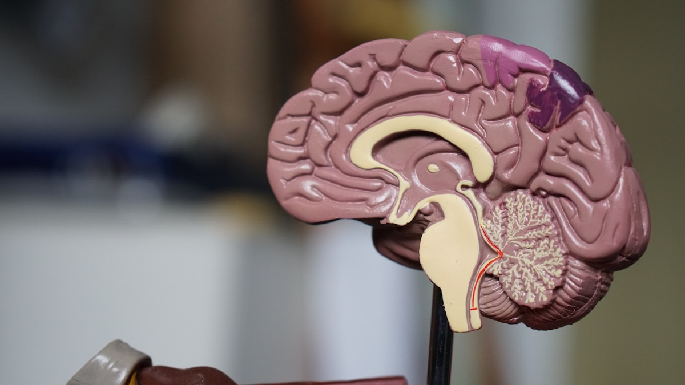

Heart & Circulatory
Hypertension 101: How to Keep Your Blood Pressure in Check
Managing hypertension is a lifelong commitment that involves lifestyle changes and, sometimes, medication. By understanding risk factors, adopting...

Hypertension, commonly known as high blood pressure, is a prevalent condition that can lead to serious health complications if left unmanaged.
As a family medicine physician, I often encounter patients with concerns about their blood pressure.
This article aims to provide you with essential information about hypertension, including prevention strategies, self-care tips, and guidance on when to seek medical attention.
Understanding Hypertension Hypertension occurs when the force of blood against the artery walls is consistently too high.
Blood pressure is measured in millimeters of mercury (mm Hg) and is recorded with two numbers: systolic pressure (the pressure when the heart beats) over diastolic pressure (the pressure when the heart rests between beats).
Hypertension is diagnosed when blood pressure readings consistently exceed 130/80 mm Hg.
Types of Hypertension Primary (Essential) Hypertension : This is the most common type and develops over time with no identifiable cause.
Secondary Hypertension : This type is caused by an underlying condition such as kidney disease, hormonal disorders, or the use of certain medications.
Risk Factors Several factors can increase your risk of developing hypertension, including: Photo by Expect Best on Pexels.com Age : The risk of hypertension increases as you age.
Diet : High intake of salt, alcohol, and processed foods can raise blood pressure.
Chronic Conditions : Conditions such as diabetes and sleep apnea can increase the risk of hypertension.
Prevention and Self-Care Preventing hypertension involves adopting a healthy lifestyle.
Here are some key strategies: Photo by Jane Trang Doan on Pexels.com Maintain a Healthy Weight : Losing even a small amount of weight can significantly lower blood pressure.
Exercise Regularly : Aim for at least 150 minutes of moderate aerobic activity or 75 minutes of vigorous activity each week.
What to do next
Use this as general education, then bring specific questions to your own clinician, especially if symptoms are severe, changing, or persistent.
Editorial review notes
Legacy source: WordPress original. Physician review required before publication if clinical recommendations changed.
- treatment
- medication